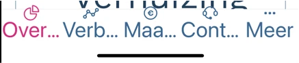

Deze bevindingen komen op meerdere schermen in de app voor.
#1 - Alle schermen zijn beperkt tot één weergavestand
De lay-out van alle schermen is beperkt tot één weergavestand, namelijk staand.
Apps moeten zowel staand als liggend goed werken. Bezoekers kiezen zelf welke stand voor hen het beste werkt. Je mag daar alleen van afwijken als één stand echt noodzakelijk is. Dit is belangrijk voor mensen die hun toestel aan hun rolstoel hebben gemonteerd en de stand niet kunnen aanpassen.
User story
Ik gebruik mijn telefoon in een houder aan mijn rolstoel. Die houder staat vast in liggende stand. Wanneer ik de app open, staat de inhoud gedraaid en kan ik hem niet lezen. Ik verwacht dat de app meedraait met de stand van mijn toestel.
Oplossing:
Zorg ervoor dat de inhoud van de app draait en zich aanpast aan de weergavestand.
#2 - Statusberichten worden niet voorgelezen
Op sommige schermen verschijnt informatie als resultaat van de interactie van de bezoeker met de app. Er verschijnt bijvoorbeeld een foutmelding of een bericht dat een actie is geslaagd. Die informatie is een statusbericht, maar de schermlezer leest het niet voor.
User story
Ik lees de app met VoiceOver. Wanneer ik een formulier verstuur en er verschijnt een foutmelding, hoor ik daar niets van. Ik denk dat het gelukt is en ga verder. Ik verwacht dat de schermlezer zo'n bericht meteen aankondigt.
Oplossing:
Zorg ervoor dat nieuwe of bijgewerkte informatie duidelijk wordt aangekondigd aan gebruikers van hulpsoftware.
#6 - Tekst kan niet worden vergroot
Nieuwe bevinding als gevolg van het oplossen van een bevinding uit de vorige audit:

In het menu onderaan het scherm verandert de tekstgrootte niet mee wanneer je de tekst in de instellingen van je telefoon tot de maximale grootte vergroot. De tekst valt daardoor niet meer weg, want hij schaalt helemaal niet meer mee.
User story
Ik heb een visuele beperking en heb de tekst in iOS op de grootste stand gezet. Overal in de app groeit de tekst mee, maar in het menu onderaan blijft hij even klein. Juist die knoppen gebruik ik het vaakst. Ik verwacht dat ook die labels meegroeien.
Oplossing:
Zorg ervoor dat de tekst in het menu onderaan het scherm meeschaalt met de tekstinstelling van het toestel.